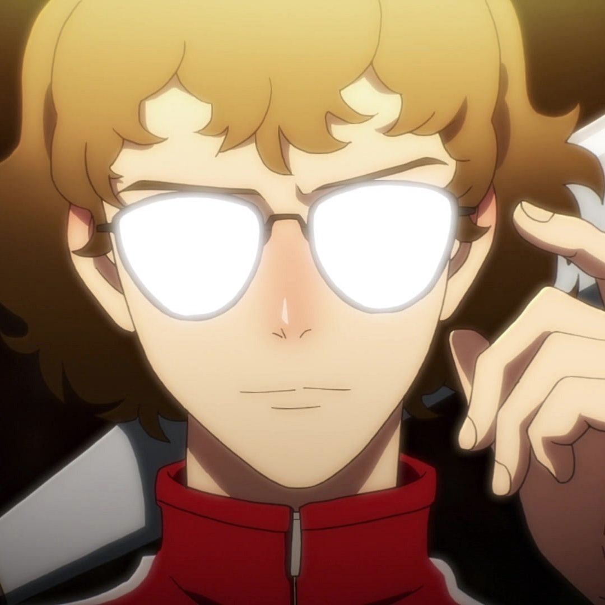
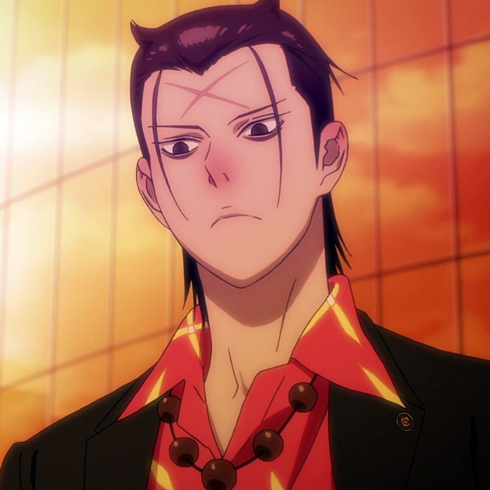
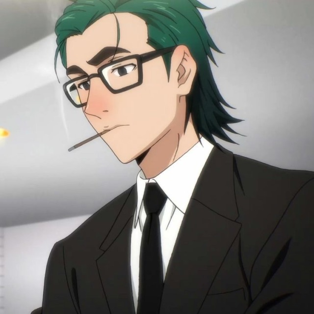

Characters
-Mori Jin
Currently, Mori can increase his power up to x250,000 in Monkey King mode. After a certain of time, the effect of the technique will stop and the user will experience a tremendous amount of pain from using it, which is known as Rebound.
-Han Daewi
Han Daewi (한대위) is one of the main protagonists of The God of High School, and was a part of the legendary duo named Mad Cows. He is a very skilled fighter and was invited to participate in the God Of High School Tournament.

-Yoo Mira
Mira is a multifaceted character. She is meek and shy one minute, outspoken and opinionated the next. She is a strong young woman driven by her heritage to succeed. She discovers her inner strength
-Ilpyo Park
One of the main supporting characters in the series. Ilpyo is a 18-year-old boy competing in the God of High School tournament. He is introduced as a logical and calculating fighter who uses a fictional version of the traditional Korean martial art of Taekkyon (태껸) called Ssamsu-Taekkyon (Korean: 쌈수택견).[11] Ilpyo joined the tournament in order to wish for the recovery of his cousin, crippled during a martial arts competition against Taek Jegal. He later acts as an ally to Mori and helps him through many hardships in the series. His Charyeok is Hojosa, the nine-tail fox of Eastern Asian folklore.
-Seungchul Baek
A 18-year-old participant in the God of High School tournament who uses a metal baseball bat as a weapon. Seungchul is of genius-level intellect and peak physical conditioning. This makes his fighting style unorthodox and unpredictable for those he is fighting.
-Manseok Gang
A 19-year old participant in the God of High School tournament for the metropolitan region who uses ITF Taekwondo to slaughter his opponents. Manseok is a violent street thug with a sadistic streak who has to be restrained by wearing straitjacket and heavy pants. During his match with Gamdo Go whom he tortures mercilessly, Mori intervenes and knocks Manseok out cold.
-Gamdo Go
A skilled practitioner of Tai Chi Chuan with a polite and composed demeanor. After promising debuts during the preliminaries of the tournament, he is pitted against Gang Manseok who proceed to beat him to a pulp and would have maimed him without the intervention of Mori. Gamdo quits the tournament after that. His role in the story substantially decrease, though he is briefly seen in later arcs mastering traditional medicine and helping the protagonists
-Taek Jega
Main antagonist of the first and second arcs. Sold off as a baby by his mother to become the heir of the chairman of a large company, he grew up with a ''Might is right'' philosophy. Dubbed a monster by his opponents and team mates alike, Taek has an arrogant personality and extremely violent style of fighting, viewing everyone around him as insignificant trash. The only exception being the guardian of Ssamsu-Taekkyon, Ilpyo, his mortal enemy and the only person to defeat him years prior to the GOH tournament. Taek's Charyeok is characterized by "Greed", allowing him to absorb other fighter's powers.
-Taejin Jin
The adoptive grandfather of protagonist Mori. Probably the strongest Genuine Fighter of the series, Taejin is powerful enough to easily defeat gods by using his sole martial skills. His disdain for Borrowed Power and unlimited potential threaten the statu-quo between gods and humans and have made him the target of many secret organizations. He is the creator and only master of the fictional Renewal Taekwondo, whom he taught Mori. His disappearance serves as the main motivation for Mori to join the GOH tournament.
-Mujin Park
Main antagonist of the manhwa. Member of the National Assembly of Korea, he is the figure in charge of the God of High School tournament. In the series, Mujin acts as a mastermind by laying out plans to achieve his goal of obtaining power in order to create a new world. Considered a prodigy and destined for greatness from a very young age, the best shaman in Korea even told him that he would become "a king who will revolutionize the world", setting the history of God Of High School into motion. His Borrowed Power is called "Longinus" which manifests as two yellow crosses appearing on each of Mujin's hands. The name Longinus is loosely based on the Roman soldier said to have pierced the side of Jesus during the Crucifixion. Longinus allows Mujin control over gravity and as a defensive shield. He commands a group of powerful humans specialized in Charyeok called commissioners or executives (Kor: 집행위원). These figures are responsible for recruiting contestants and running the God of Highschool Tournament.
-Commissioner O
Member of the judges. Slightly shorter than the other executives, he has white, shoulder-length hair and dark-colored skin. O has won the first G.O.H tournament and, as such, is regarded by his colleagues as the strongest judge. His calm and perky character often makes him act as a mediator between the irritable R and the rash Q, often at each other's throat. He wields the Charyeok "Dragon slayer" which enables him to summon and command dragons as well as controlling fire. O is the one who recruited Mira for the G.O.H Tournament and appears fearful of the young woman, always avoiding eye contact with her and calling her "a monster". His true name is Sochun Yang.
-Commissioner P
Only female member of the judges, she acts a Mujin personal secretary, almost never leaving his side. P is a serious, dutiful and professional executive as well as caring of her colleagues. She is a tall, slim woman, wearing a female version of the Judge's uniform with blue hair tied in a bun. P uses the Charyeok "Marionette" to create "dolls" or copies of other people and be connected to them thus knowing and seeing what they know and see.
-Commissioner Q
Member of the judges. Recognizable by his tall stature, green hair and square glass. Q has a laid back if unorganized way of living his life, yet harbors an arrogant and act-before-thinking temper which often put him at odd with his boss and fellow commissioners. A running gag in the series is that whenever Q fights, his salary lessens. His Charyeok is "Joker", a scythe wielding jester-like entity he can summon with cards. Q recruited Daewi for the tournament and even trained him later on. He eventually married his student's older sister Daeryeong, with whom he has three kids.
-Commissioner R
Member of the judges. R is a tall, slender man and wears the typical judge uniform. He has straight blonde hair going down his neck with narrow eyes that are often seen closed. Calm and collected, R is, like the other executives, proud of his strength. This makes him appear annoyed or vindictive when he is bested or doesn't get his way. R's Charyeok is unnamed and very unusual, as it enables him to forcibly take power from gods without their consent and control the wind. He was the one to recruit Mori for the tournament, inflicting the high-schooler his first defeat ever.
-Announcer/Commissioner T
Member of the judge and the announcer of the GOH tournament. He has black spiky hair and orange sunglasses. Being himself blind, T also goes by the nickname Bogsa Sim, probably based on a blind character of a famous Korean Pansori story: Simcheongga. He has a long and pointed nose with shark-like teeth. Being a very skilled sword-man, T provides some advice to Mira for the tournament, even revealing he owes his blindness to an encounter with Mira's own family technique of the Moonlight Sword. His true name is Jeongso Sim.